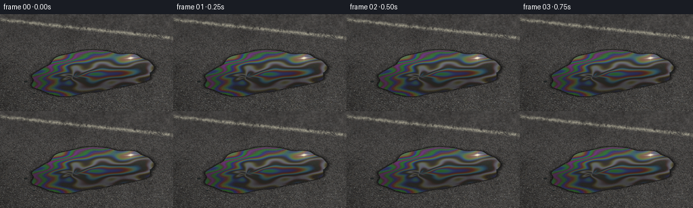
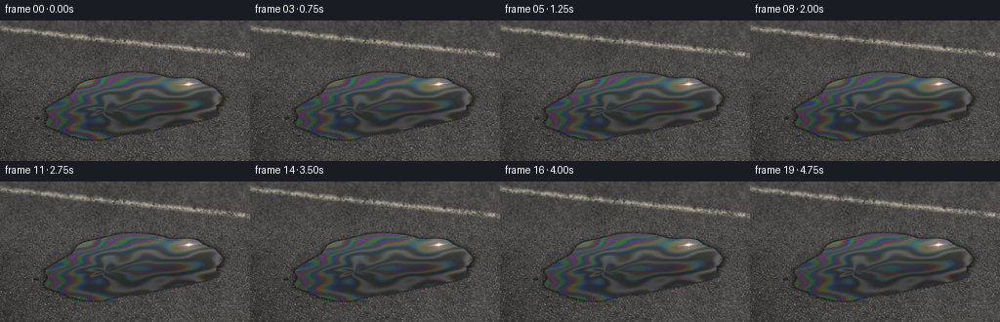
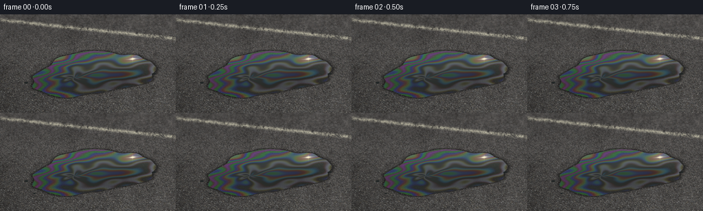
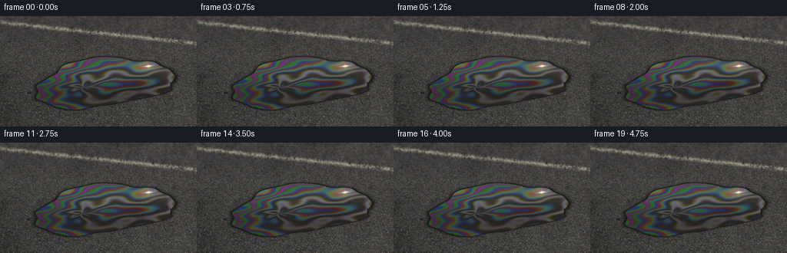

CODING AGENTS AS PIXEL WORLD MODELS
traex/GPT-6.1-Sol · phygen_081
点击播放 · 原生 RGB 像素
逐轮保存的候选
回放视频、检查图与代码变化。
每份候选均可单独播放。实际图片检查记录在下方工具轨迹中。
候选 01播放与检查图
点击播放 · 原生 RGB 像素


展开代码变化
--- 上一保存版本 +++ 本次保存版本 @@ -0,0 +1,150 @@ +from pathlib import Path +import json +import numpy as np +from PIL import Image, ImageDraw, ImageFilter +from scipy.ndimage import gaussian_filter, map_coordinates +import artifact_io + +ROOT = Path(__file__).resolve().parent +SPEC = json.loads((ROOT/'task_spec.json').read_text()) +W,H=SPEC['width'],SPEC['height'] +S=3 +WW,HH=W*S,H*S +rng=np.random.default_rng(814) +y,x=np.mgrid[0:HH,0:WW].astype(np.float32) +x/=S;y/=S + +def smooth_noise(sigma): + a=gaussian_filter(rng.normal(size=(HH,WW)).astype(np.float32),sigma) + return a/(a.std()+1e-6) + +# Fine aggregate of an old, dry, sun-warmed asphalt road. +n1=smooth_noise(.52);n2=smooth_noise(1.6);n3=smooth_noise(7);n4=smooth_noise(33) +light=1.00+.11*x/W-.11*y/H +base=59+7*n1+5*n2+2*n3+2*n4 +road=np.stack([base*1.035+3,base*1.015+2,base*.99+2],axis=-1)*light[...,None] +road=np.clip(road,0,255).astype(np.uint8) +canvas=Image.fromarray(road) +d=ImageDraw.Draw(canvas,'RGBA') +# Each small chipped grain has a dark embedded rim and a sunny bevel. +for i in range(15500): + xx=rng.uniform(-3,W+3); yy=rng.uniform(-3,H+3) + perspective=.40+.85*(yy/H) + radius=rng.uniform(.20,.90)*perspective + ry=radius*rng.uniform(.40,.90) + num=int(rng.integers(4,7)) + angles=np.sort(rng.uniform(0,2*np.pi,num)) + radii=rng.uniform(.68,1.18,num) + pts=[((xx+np.cos(a)*radius*r)*S,(yy+np.sin(a)*ry*r)*S) for a,r in zip(angles,radii)] + c=float(rng.uniform(48,118)) + warm=rng.random()<.19 + rgb=(int(c+7 if warm else c),int(c+1),int(c-8 if warm else c+2)) + # Cavities and gravel rather than a layer of white dots. + d.polygon([(a-.18*S,b+.22*S) for a,b in pts],fill=(17,20,20,145)) + d.polygon(pts,fill=(*rgb,200)) + if radius>.48: + p=max(pts,key=lambda p:p[0]-p[1]) + d.line([pts[(pts.index(p)-1)%num],p],fill=(160,153,133,95),width=1) +road=np.asarray(canvas).astype(np.float32) +# A worn off-white roadside marking, receding diagonally across the far edge. +linecenter=8+.107*x +mark=np.clip(1-np.abs(y-linecenter)/3.7,0,1) +wear=np.clip(.68+.29*n2+.1*n3,0,1) +paint=mark*wear*.83 +road=road*(1-paint[...,None])+np.array([184,180,158])*paint[...,None] +# Distance softness and a diffuse shadow entering from the lower left. +blur=np.asarray(Image.fromarray(np.uint8(np.clip(road,0,255))).filter(ImageFilter.GaussianBlur(.85*S))).astype(np.float32) +far=np.clip((43-y)/45,0,1)*.64 +road=road*(1-far[...,None])+blur*far[...,None] +shade=1-.17*np.exp(-((x+20)/66)**2-((y-140)/47)**2) +road*=shade[...,None] + +# Irregular flat footprint, lying in the road plane, viewed obliquely. +# Tilt in the road plane means the rear lip is visibly compressed. +cx,cy=135.,87. +u=(x-cx)/89. +v=(y-cy+.10*(x-cx))/31. +a=np.arctan2(v,u) +r=np.sqrt(u*u+v*v) +boundary=1+.074*np.sin(3*a+.65)+.038*np.sin(5*a-1.9)+.028*np.cos(9*a+.6)+.013*np.sin(14*a) +sd=(boundary-r)*27 +mask=np.clip(sd*S+.5,0,1) +# Narrow damp dark perimeter outside the reflective layer. +outside=np.exp(-(np.maximum(-sd,0)/1.25)**2)*(1-mask) +# A faint translucent film on the ground just outside the principal puddle. +outer=np.clip((sd+2.4)/3.0,0,1)*(1-mask) + +# Smooth folded thickness field; this produces real wavelength-dependent thin-film bands. +noise_film=smooth_noise(20) +xx=(x-cx)/90; yy=(y-cy+.1*(x-cx))/33 +rr=np.sqrt((xx+.30)**2+(yy-.08)**2) +ang=np.arctan2(yy-.08,xx+.30) +fold=.075*np.sin(5*ang+8*rr)*np.exp(-1.4*rr) +fold+=.045*np.sin(9*xx+4*yy)+.045*np.sin(12*yy-2*xx) +thickness=.62+.59*(1-r)+.24*xx+.20*yy+fold+.025*noise_film +# Wispy, off-center eddies are distorted rather than perfectly circular. +thickness+=.17*np.exp(-((xx-.45)**2/.16+(yy+.23)**2/.60))*np.sin(7*yy+2*xx) + +# Reflection of the clear sky and the warm sunlight in the smooth oil. +skyblend=np.clip((.5-yy)/1.7,0,1) +reflect=np.zeros((HH,WW,3),np.float32) +reflect[:]=[34,34,30] +reflect+=skyblend[...,None]*np.array([12,23,30],np.float32) +reflect+=np.exp(-((xx-.60)/.75)**2-((yy+.5)/.8)**2)[...,None]*np.array([20,17,10]) +# Slightly mottled dark asphalt can still be seen through the film at the thin margin. +transmit=np.clip((r-.50)*.35,0,.17) +reflect=reflect*(1-transmit[...,None])+road*transmit[...,None] + +frames=[] +for k in range(SPEC['frames']): + t=k/SPEC['fps'] + # Oil is highly viscous: only minute sheen motion, not a moving rainbow disc. + phase_motion=.005*np.sin(1.1*t+4*xx+3*yy)+.003*np.sin(1.8*t-6*yy) + thick=thickness+phase_motion + waves=np.array([.650,.530,.445],dtype=np.float32) + # Thin film on dark road: phase lag at the upper interface. + phase=4*np.pi*1.46*thick[...,None]/waves + spectrum=.5+.5*np.cos(phase) + # Multiple wavelengths smooth saturated RGB response into pearly interference. + spectrum2=.5+.5*np.cos(phase*np.array([.96,1.035,1.02])) + spectrum=.70*spectrum+.30*spectrum2 + spectral=np.maximum(spectrum-.25,0)**1.08 + oil=reflect.copy() + strength= .74+.22*np.sin(2*xx-3*yy+.5) + oil+=spectral*strength[...,None]*np.array([89,91,101]) + # Amber-dark patches where the thicker oil absorbs light. + darkblob=np.exp(-((xx-.53)/.40)**2-((yy-.2)/.6)**2) + oil*=1-.19*darkblob[...,None] + # Broad, soft specular sun reflection, tight core, restrained photographic bloom. + sx=193+.24*np.sin(t*.75); sy=65+.12*np.cos(t) + dx=x-sx;dy=y-sy+.10*dx + glow=np.exp(-((dx/14)**2+(dy/6.5)**2)) + core=np.exp(-((dx/2.9)**2+(dy/1.15)**2)) + flare=np.exp(-((dx/7.8)**2+(dy/.38)**2))*.56 + flare+=np.exp(-((dx/.52)**2+(dy/3.9)**2))*.19 + spec=glow*.31+core*.88+flare + oil=oil*(1-np.clip(spec,0,.96)[...,None])+np.clip(spec,0,.96)[...,None]*np.array([255,246,207]) + # Wet boundary: nearly black capillary edge, with a broken sunlight-facing lip. + im=road*(1-outside[...,None]*.56) + im=im*(1-outer[...,None]*.13) + im=im*(1-mask[...,None])+oil*mask[...,None] + rim=np.exp(-(sd/.35)**2)*np.clip(-v+.15,0,1)*(.28+.12*np.sin(19*a)) + im+=rim[...,None]*np.array([31,34,30]) + # Three tiny dark oil drops nearby reinforce the liquid footprint. + for px,py,rx,ry in [(38,100,3.2,1.3),(50,118,2,1.05),(224,87,3.5,1.15)]: + dr=np.sqrt(((x-px)/rx)**2+((y-py+.09*(x-px))/ry)**2) + dm=np.clip((1-dr)*4*S,0,1)*.91 + dc=np.stack([np.full_like(x,29),np.full_like(x,34),np.full_like(x,34)],-1) + im=im*(1-dm[...,None])+dc*dm[...,None] + # Lens bloom leaks gently past the bright reflection, without white outlines. + bloom=gaussian_filter((core*mask).astype(np.float32),2.4*S) + im+=bloom[...,None]*np.array([29,24,14]) + # A near-static handheld-free dolly; keeps all material fixed to the road. + zoom=1+.010*t/4.75 + tx=.75*t/4.75;ty=.23*t/4.75 + coords=[((y-H/2)/zoom+H/2+ty)*S,((x-W/2)/zoom+W/2+tx)*S] + im=np.stack([map_coordinates(im[...,c],coords,order=1,mode='nearest') for c in range(3)],-1) + im=np.clip(im,0,255).astype(np.uint8) + frame=Image.fromarray(im).resize((W,H),Image.Resampling.LANCZOS) + frames.append(np.asarray(frame)) +artifact_io.save(np.stack(frames).astype(np.uint8),ROOT)
候选 02播放与检查图
点击播放 · 原生 RGB 像素


展开代码变化
--- 上一保存版本
+++ 本次保存版本
@@ -57,7 +57,7 @@
far=np.clip((43-y)/45,0,1)*.64
road=road*(1-far[...,None])+blur*far[...,None]
shade=1-.17*np.exp(-((x+20)/66)**2-((y-140)/47)**2)
-road*=shade[...,None]
+road*=shade[...,None]*1.13
# Irregular flat footprint, lying in the road plane, viewed obliquely.
# Tilt in the road plane means the rear lip is visibly compressed.
@@ -88,7 +88,7 @@
# Reflection of the clear sky and the warm sunlight in the smooth oil.
skyblend=np.clip((.5-yy)/1.7,0,1)
reflect=np.zeros((HH,WW,3),np.float32)
-reflect[:]=[34,34,30]
+reflect[:]=[39,42,40]
reflect+=skyblend[...,None]*np.array([12,23,30],np.float32)
reflect+=np.exp(-((xx-.60)/.75)**2-((yy+.5)/.8)**2)[...,None]*np.array([20,17,10])
# Slightly mottled dark asphalt can still be seen through the film at the thin margin.
@@ -110,7 +110,7 @@
spectrum=.70*spectrum+.30*spectrum2
spectral=np.maximum(spectrum-.25,0)**1.08
oil=reflect.copy()
- strength= .74+.22*np.sin(2*xx-3*yy+.5)
+ strength=(.43+.35*np.clip(r,0,1))*(.85+.15*np.sin(2*xx-3*yy+.5))
oil+=spectral*strength[...,None]*np.array([89,91,101])
# Amber-dark patches where the thicker oil absorbs light.
darkblob=np.exp(-((xx-.53)/.40)**2-((yy-.2)/.6)**2)
@@ -125,7 +125,7 @@
spec=glow*.31+core*.88+flare
oil=oil*(1-np.clip(spec,0,.96)[...,None])+np.clip(spec,0,.96)[...,None]*np.array([255,246,207])
# Wet boundary: nearly black capillary edge, with a broken sunlight-facing lip.
- im=road*(1-outside[...,None]*.56)
+ im=road*(1-outside[...,None]*.40)
im=im*(1-outer[...,None]*.13)
im=im*(1-mask[...,None])+oil*mask[...,None]
rim=np.exp(-(sd/.35)**2)*np.clip(-v+.15,0,1)*(.28+.12*np.sin(19*a))
可观测工具轨迹
实际执行的命令与返回图片。
命令 1exit 0
/bin/bash -lc 'ls -la; cat prompt.txt; cat GENERATION_RULES.md; cat task_spec.json'
命令 2exit 0
/bin/bash -lc "cat artifact_io.py; python - <<'PY' import importlib.util for x in ['numpy','PIL','scipy','cv2']: print(x, bool(importlib.util.find_spec(x))) PY"
命令 3exit 0
/bin/bash -lc "cat > generate.py <<'PY'
from pathlib import Path
import json
import numpy as np
from PIL import Image, ImageDraw, ImageFilter
from scipy.ndimage import gaussian_filter, map_coordinates
import artifact_io
ROOT = Path(__file__).resolve().parent
SPEC = json.loads((ROOT/'task_spec.json').read_text())
W,H=SPEC['width'],SPEC['height']
S=3
WW,HH=W*S,H*S
rng=np.random.default_rng(814)
y,x=np.mgrid[0:HH,0:WW].astype(np.float32)
x/=S;y/=S
def smooth_noise(sigma):
a=gaussian_filter(rng.normal(size=(HH,WW)).astype(np.float32),sigma)
return a/(a.std()+1e-6)
# Fine aggregate of an old, dry, sun-warmed asphalt road.
n1=smooth_noise(.52);n2=smooth_noise(1.6);n3=smooth_noise(7);n4=smooth_noise(33)
light=1.00+.11*x/W-.11*y/H
base=59+7*n1+5*n2+2*n3+2*n4
road=np.stack([base*1.035+3,base*1.015+2,base*.99+2],axis=-1)*light[...,None]
road=np.clip(road,0,255).astype(np.uint8)
canvas=Image.fromarray(road)
d=ImageDraw.Draw(canvas,'RGBA')
# Each small chipped grain has a dark embedded rim and a sunny bevel.
for i in range(15500):
xx=rng.uniform(-3,W+3); yy=rng.uniform(-3,H+3)
perspective=.40+.85*(yy/H)
radius=rng.uniform(.20,.90)*perspective
ry=radius*rng.uniform(.40,.90)
num=int(rng.integers(4,7))
angles=np.sort(rng.uniform(0,2*np.pi,num))
radii=rng.uniform(.68,1.18,num)
pts=[((xx+np.cos(a)*radius*r)*S,(yy+np.sin(a)*ry*r)*S) for a,r in zip(angles,radii)]
c=float(rng.uniform(48,118))
warm=rng.random()<.19
rgb=(int(c+7 if warm else c),int(c+1),int(c-8 if warm else c+2))
# Cavities and gravel rather than a layer of white dots.
d.polygon([(a-.18*S,b+.22*S) for a,b in pts],fill=(17,20,20,145))
d.polygon(pts,fill=(*rgb,200))
if radius>.48:
p=max(pts,key=lambda p:p[0]-p[1])
d.line([pts[(pts.index(p)-1)%num],p],fill=(160,153,133,95),width=1)
road=np.asarray(canvas).astype(np.float32)
# A worn off-white roadside marking, receding diagonally across the far edge.
linecenter=8+.107*x
mark=np.clip(1-np.abs(y-linecenter)/3.7,0,1)
wear=np.clip(.68+.29*n2+.1*n3,0,1)
paint=mark*wear*.83
road=road*(1-paint[...,None])+np.array([184,180,158])*paint[...,None]
# Distance softness and a diffuse shadow entering from the lower left.
blur=np.asarray(Image.fromarray(np.uint8(np.clip(road,0,255))).filter(ImageFilter.GaussianBlur(.85*S))).astype(np.float32)
far=np.clip((43-y)/45,0,1)*.64
road=road*(1-far[...,None])+blur*far[...,None]
shade=1-.17*np.exp(-((x+20)/66)**2-((y-140)/47)**2)
road*=shade[...,None]
# Irregular flat footprint, lying in the road plane, viewed obliquely.
# Tilt in the road plane means the rear lip is visibly compressed.
cx,cy=135.,87.
u=(x-cx)/89.
v=(y-cy+.10*(x-cx))/31.
a=np.arctan2(v,u)
r=np.sqrt(u*u+v*v)
boundary=1+.074*np.sin(3*a+.65)+.038*np.sin(5*a-1.9)+.028*np.cos(9*a+.6)+.013*np.sin(14*a)
sd=(boundary-r)*27
mask=np.clip(sd*S+.5,0,1)
# Narrow damp dark perimeter outside the reflective layer.
outside=np.exp(-(np.maximum(-sd,0)/1.25)**2)*(1-mask)
# A faint translucent film on the ground just outside the principal puddle.
outer=np.clip((sd+2.4)/3.0,0,1)*(1-mask)
# Smooth folded thickness field; this produces real wavelength-dependent thin-film bands.
noise_film=smooth_noise(20)
xx=(x-cx)/90; yy=(y-cy+.1*(x-cx))/33
rr=np.sqrt((xx+.30)**2+(yy-.08)**2)
ang=np.arctan2(yy-.08,xx+.30)
fold=.075*np.sin(5*ang+8*rr)*np.exp(-1.4*rr)
fold+=.045*np.sin(9*xx+4*yy)+.045*np.sin(12*yy-2*xx)
thickness=.62+.59*(1-r)+.24*xx+.20*yy+fold+.025*noise_film
# Wispy, off-center eddies are distorted rather than perfectly circular.
thickness+=.17*np.exp(-((xx-.45)**2/.16+(yy+.23)**2/.60))*np.sin(7*yy+2*xx)
# Reflection of the clear sky and the warm sunlight in the smooth oil.
skyblend=np.clip((.5-yy)/1.7,0,1)
reflect=np.zeros((HH,WW,3),np.float32)
reflect[:]=[34,34,30]
reflect+=skyblend[...,None]*np.array([12,23,30],np.float32)
reflect+=np.exp(-((xx-.60)/.75)**2-((yy+.5)/.8)**2)[...,None]*np.array([20,17,10])
# Slightly mottled dark asphalt can still be seen through the film at the thin margin.
transmit=np.clip((r-.50)*.35,0,.17)
reflect=reflect*(1-transmit[...,None])+road*transmit[...,None]
frames=[]
for k in range(SPEC['frames']):
t=k/SPEC['fps']
# Oil is highly viscous: only minute sheen motion, not a moving rainbow disc.
phase_motion=.005*np.sin(1.1*t+4*xx+3*yy)+.003*np.sin(1.8*t-6*yy)
thick=thickness+phase_motion
waves=np.array([.650,.530,.445],dtype=np.float32)
# Thin film on dark road: phase lag at the upper interface.
phase=4*np.pi*1.46*thick[...,None]/waves
spectrum=.5+.5*np.cos(phase)
# Multiple wavelengths smooth saturated RGB response into pearly interference.
spectrum2=.5+.5*np.cos(phase*np.array([.96,1.035,1.02]))
spectrum=.70*spectrum+.30*spectrum2
spectral=np.maximum(spectrum-.25,0)**1.08
oil=reflect.copy()
strength= .74+.22*np.sin(2*xx-3*yy+.5)
oil+=spectral*strength[...,None]*np.array([89,91,101])
# Amber-dark patches where the thicker oil absorbs light.
darkblob=np.exp(-((xx-.53)/.40)**2-((yy-.2)/.6)**2)
oil*=1-.19*darkblob[...,None]
# Broad, soft specular sun reflection, tight core, restrained photographic bloom.
sx=193+.24*np.sin(t*.75); sy=65+.12*np.cos(t)
dx=x-sx;dy=y-sy+.10*dx
glow=np.exp(-((dx/14)**2+(dy/6.5)**2))
core=np.exp(-((dx/2.9)**2+(dy/1.15)**2))
flare=np.exp(-((dx/7.8)**2+(dy/.38)**2))*.56
flare+=np.exp(-((dx/.52)**2+(dy/3.9)**2))*.19
spec=glow*.31+core*.88+flare
oil=oil*(1-np.clip(spec,0,.96)[...,None])+np.clip(spec,0,.96)[...,None]*np.array([255,246,207])
# Wet boundary: nearly black capillary edge, with a broken sunlight-facing lip.
im=road*(1-outside[...,None]*.56)
im=im*(1-outer[...,None]*.13)
im=im*(1-mask[...,None])+oil*mask[...,None]
rim=np.exp(-(sd/.35)**2)*np.clip(-v+.15,0,1)*(.28+.12*np.sin(19*a))
im+=rim[...,None]*np.array([31,34,30])
# Three tiny dark oil drops nearby reinforce the liquid footprint.
for px,py,rx,ry in [(38,100,3.2,1.3),(50,118,2,1.05),(224,87,3.5,1.15)]:
dr=np.sqrt(((x-px)/rx)**2+((y-py+.09*(x-px))/ry)**2)
dm=np.clip((1-dr)*4*S,0,1)*.91
dc=np.stack([np.full_like(x,29),np.full_like(x,34),np.full_like(x,34)],-1)
im=im*(1-dm[...,None])+dc*dm[...,None]
# Lens bloom leaks gently past the bright reflection, without white outlines.
bloom=gaussian_filter((core*mask).astype(np.float32),2.4*S)
im+=bloom[...,None]*np.array([29,24,14])
# A near-static handheld-free dolly; keeps all material fixed to the road.
zoom=1+.010*t/4.75
tx=.75*t/4.75;ty=.23*t/4.75
coords=[((y-H/2)/zoom+H/2+ty)*S,((x-W/2)/zoom+W/2+tx)*S]
im=np.stack([map_coordinates(im[...,c],coords,order=1,mode='nearest') for c in range(3)],-1)
im=np.clip(im,0,255).astype(np.uint8)
frame=Image.fromarray(im).resize((W,H),Image.Resampling.LANCZOS)
frames.append(np.asarray(frame))
artifact_io.save(np.stack(frames).astype(np.uint8),ROOT)
PY
python generate.py"命令 4exit 0
/bin/bash -lc "python - <<'PY'
p='generate.py'
s=open(p).read().replace('road*=shade[...,None]','road*=shade[...,None]*1.13').replace('reflect[:]=[34,34,30]','reflect[:]=[39,42,40]').replace('strength= .74+.22*np.sin(2*xx-3*yy+.5)','strength=(.43+.35*np.clip(r,0,1))*(.85+.15*np.sin(2*xx-3*yy+.5))').replace('im=road*(1-outside[...,None]*.56)','im=road*(1-outside[...,None]*.40)')
open(p,'w').write(s)
PY
python generate.py
ls -lh pixels.npz index.html inspection.png; python - <<'PY'
import numpy as np
from PIL import Image
p=np.load('pixels.npz')['pixels']
print('Packed video shape:',p.shape)
print('RGB frame count:',len(__import__('glob').glob('frames/*.png')))
PY"视觉工具实际返回图片 1

保存候选 2 份；完成命令 4 次；可验证图片返回 1 张。原始 API 响应与完整日志保留在本地。